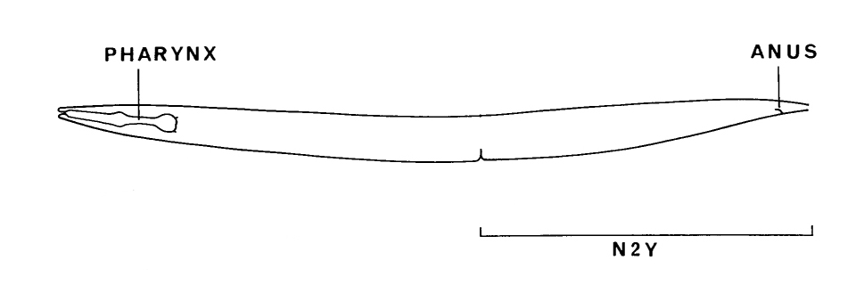
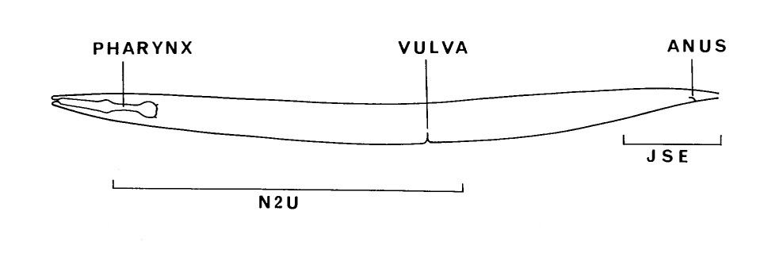

Description of EM series

Adult male series:
Combined Anterior + Posterior (N930 + N2Y)
Anterior (N930) - Description
- Chemical adjacency matrix -- #EM sections (.graphml.bz2)
- Electrical adjacency matrix -- #EM sections (.graphml.bz2)
Posterior (N2Y) - Description

Adult hermaphrodite series:
Combined Anterior + Posterior (N2U + JSE)
Anterior (N2U) - Description
- Chemical adjacency matrix -- #EM sections (.graphml.bz2)
- Electrical adjacency matrix -- #EM sections (.graphml.bz2)
- Chemical adjacency matrix -- synapse counts (.csv)
- Electrical adjacency matrix -- synapse counts (.csv)
- Chemical synapse list (.csv)
- Electrical synapse list (.csv)
- Volumetric segmentation ( TrakEM2 )
- Contact list (.tsv)
Posterior (JSE) - Description
- Chemical adjacency matrix -- #EM sections (.graphml.bz2)
- Electrical adjacency matrix -- #EM sections (.graphml.bz2)
- Chemical adjacency matrix -- synapse counts (.csv)
- Electrical adjacency matrix -- synapse counts (.csv)
- Chemical synapse list (.csv)
- Electrical synapse list (.csv)
Pharynx (N2W and N2T) - Description
- Edge list (.csv)
- Chemical adjacency matrix -- #EM sections (.graphml.bz2)
- Electrical adjacency matrix -- #EM sections (.graphml.bz2)